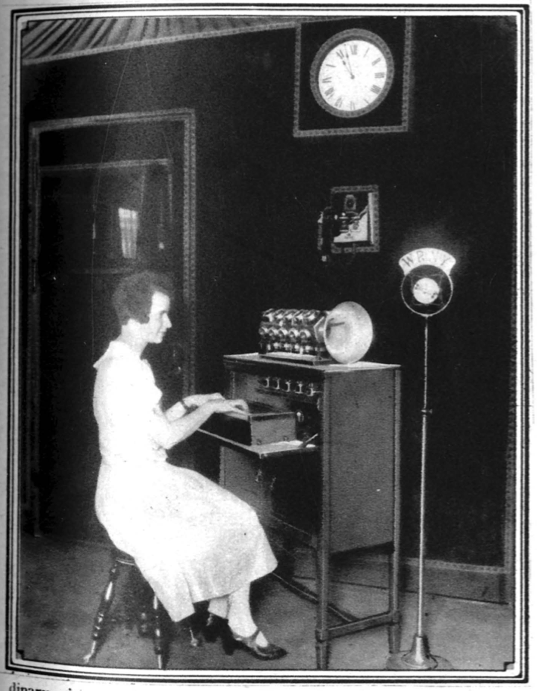
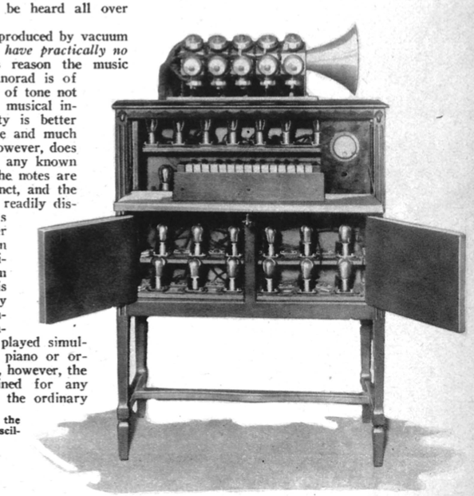
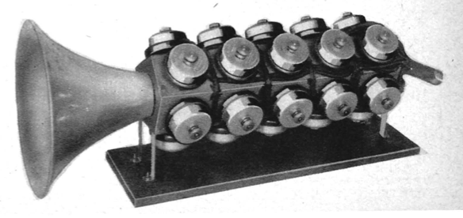

The "Pianorad"
*Radio News*, vol. 8 no. 5 , November 1926
DRAFT: Please do not share without permission of the author. Typeset versions in web | pdf | doc
THIS year marks the second centenary of the creation of the piano. There has been no radical development in the piano since except the advent of the player piano or mechanical piano.
The Pianorad, which is played very much like the piano, by means of a similar keyboard, is a new invention. In this new musical instrument, the principles of the piano as well as the principles of radio are for the first time combined in a single musical instrument.
\begin{center} \fbox{ \parbox[c]{7cm}{
The Pianorad is the invention of Mr. Gernsback, and was built in the RADIO NEWS LABORATORIES by Mr. Clyde J. Fitch.
\vspace{3mm}
This is the first time that a musical instrument has been constructed from radio parts; and it should therefore have more than passing attention from all radio interests. } } \end{center}
The Pianorad was first demonstrated on Saturday, June 12, during the celebration of Station WRNY’s first anniversary, when it was used to broadcast its music.

Theory of the Instrument
The Pianorad has a keyboard like an ordinary piano, and there is a radio vacuum tube for each one of the piano keys. Every time a key is depressed, there is energized a radio-oscillator circuit which gives rise to a pure, flutelike note through the loud-speaker connected to the device. It is possible to connect any number of loud-speakers to the Pianorad if it is desired to flood an auditorium with its tones. Also, by arranging suitable outlets for loud-speakers on different floors or different rooms, the sounds of the Pianorad can be heard all over any large building.
The musical notes produced by vacuum tubes in this manner have practically no overtones. For this reason the music produced by the Pianorad is of an exquisite pureness of tone not realized in any other musical instrument. The quality is better than that of the flute and much purer. The sound, however, does not resemble that of any known musical instrument, the notes are quite sharp and distinct, and the Pianorad can be readily distinguished by its music from any other musical instrument in existence. In the Pianorad one vacuum tube for each key is connected electrically with certain coils (inductances). Any number of notes can be played simultaneously, as on the piano or organ; unlike the piano, however, the notes can be sustained for any length of time. On the ordinary piano you strike the key and the sound quickly dies away, in the Pianorad, the sound remains as long as the keys are depressed.

Electric, Not Sound Waves
The loud-speaker arrangement makes it possible for an artist to play the keyboard while the music emerges, perhaps miles away from the Pianorad. It is thus possible for the pianist to play the instrument in absolute silence while the music is produced at a distance. This requires simply that a wire line must connect the output end of the Pianorad instrument with the loud-speaker at some distance away. It is quite feasible for the Pianorad to be played in New York while the music will be heard at the Chicago end, with any number of loud-speakers connected by amplifiers to a long-distance telephone wire line.
A novel idea is the connection of the Pianorad direct to the broadcast-station transmitter. In this case, instead of using a loud-speaker in the studio, the Pianorad is connected electrically to the broadcast transmitter. The artist now plays the Pianorad in the studio in absolute silence. No sound is heard. The radio audience, however, will enjoy the music, although no one in the studio can hear it. In order that the pianist may hear what he is playing, he will wear a set of head receivers attached to an ordinary radio set. The music, therefore, is picked out from the air by the receiver and thus only the artist hears it. In the studio itself, no sound is audible for the Pianorad itself is silent.
Developments Still Continuing
The Pianorad has as yet not entered the commercial stage. The instrument illustrated in this article has 25 keys and therefore, 25 notes. A full 88-note Pianorad has as yet not been constructed, but will be built in a short time. The larger instrument could have been built at once, but it would occupy almost as much aspace as a piano; and as this amount of room was not then available in the studio of WRNY, for which the first Pianorad was especially constructed, the smaller instrument was built instead.

The Pianorad at WRNY is usually accompanied by piano or violin or both; very pleasing combinations are produced in this manner. At present it uses a single stage of amplification, giving volume enough, in connection with one loud-speaker, to more than fill a fair sized room. By adding several stages of audio-frequency amplification, sufficient volume can be obtained to fill a large church or auditorium.
The Pianorad was first demonstrated publicly Saturday, June 12 at 9 P. M., with a number of brilliant selections played on it by Mr. Ralph Christman; the concert being broadcast over WRNY at The Roosevelt, New York.
The principle embodied in this instrument was first demonstrated in 1915 by Dr. Lee de Forest, inventor of the Audion. At that time Dr. de Forest was able to produce musical tones by means of vacuum tubes, but the radio art at that time had not progressed sufficiently to make possible the Pianorad.
An article by Clyde J. Fitch describing the construction of the Pianorad will appear in the December issue of RADIO NEWS.
Grant Wythoff, editor
grant.wythoff@gmail.com

This work is licensed under a Creative Commons Attribution-NonCommercial-NoDerivatives 4.0 International License.